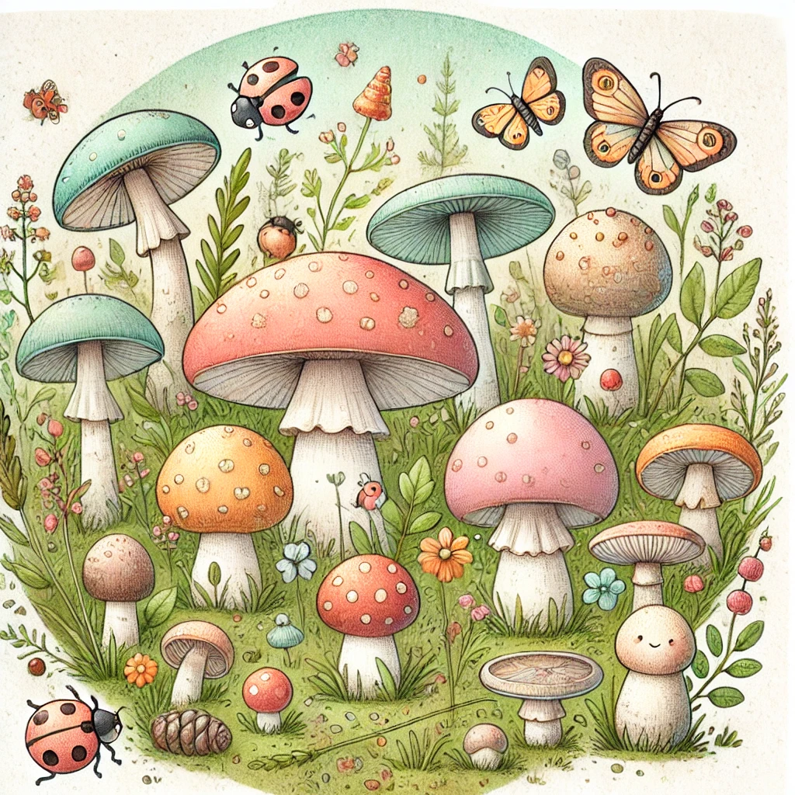

รายวิชานี้เน้นศึกษาลักษณะทั่วไปของเห็ด รวมถึงชนิดของเห็ดที่พบในธรรมชาติ ทั้งเห็ดกินได้และเห็ดพิษที่พบได้บ่อยในประเทศไทย ผู้เรียนจะได้เรียนรู้วิธีการจำแนกเห็ดชนิดต่าง ๆ อย่างถูกต้อง เพื่อป้องกันการรับประทานเห็ดพิษซึ่งอาจเป็นอันตรายถึงชีวิต นอกจากนี้ รายวิชายังครอบคลุมถึงการรู้จักและระมัดระวังข้อควรปฏิบัติในการเก็บและบริโภคเห็ดอย่างปลอดภัย รวมทั้งการตอบสนองเมื่อพบเห็ดพิษ
เนื้อหาหลักประกอบด้วย ความรู้เบื้องต้นเกี่ยวกับเห็ด ประเภทของเห็ดและบทบาททางนิเวศวิทยา ลักษณะสำคัญของเห็ดกินได้ที่นิยมรับประทานและประโยชน์ต่อสุขภาพ ลักษณะและพิษของเห็ดพิษชนิดที่พบมาก รวมถึงอาการและผลกระทบจากการบริโภค ข้อควรระวังและแนวทางการป้องกันการรับประทานเห็ดพิษ ขั้นตอนและวิธีปฏิบัติเมื่อต้องเผชิญกับเหตุการณ์รับประทานเห็ดพิษ การฝึกปฏิบัติการแยกแยะเห็ดชนิดต่าง ๆ ด้วยตนเองอย่างถูกต้องภายใต้การดูแลของผู้เชี่ยวชาญ
รายวิชานี้เหมาะสำหรับผู้ที่สนใจในด้านการเก็บเห็ด การทำอาหารจากเห็ด หรือผู้ที่ต้องการความรู้เพื่อความปลอดภัยในการบริโภคเห็ดป่า รวมทั้งผู้ที่ทำงานด้านเกษตร ป่าไม้ หรือสุขภาพ
